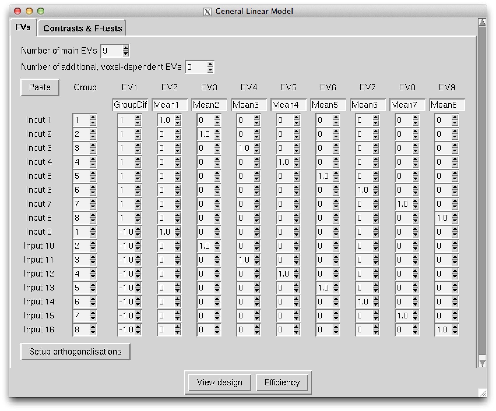
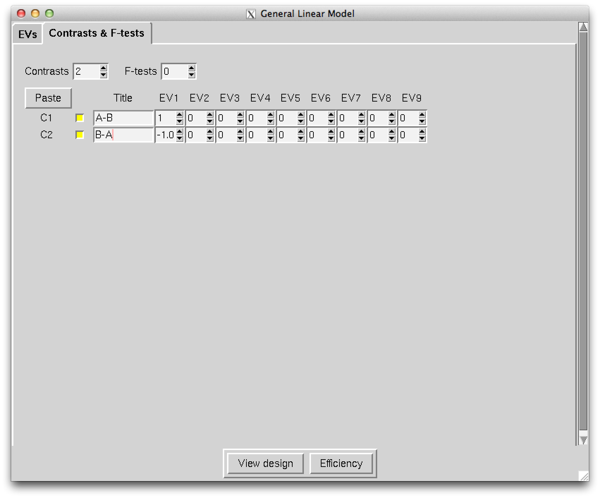

Paired T-test GLM GUI
The following images demonstrate how to use the GLM GUI to set up the necessary information for randomise to do a paired T-test on 8 subjects. When saved it will create the files design.mat, design.con and design.grp (if design is selected as the main name).
Main window / Contrast window

